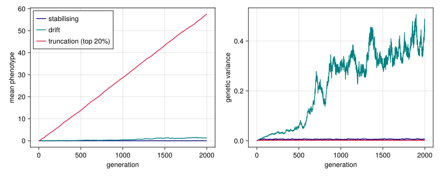
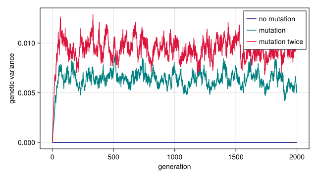
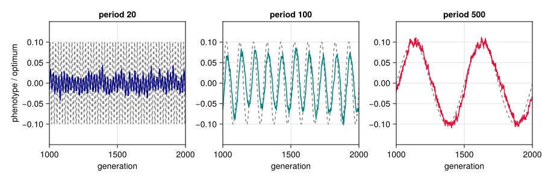
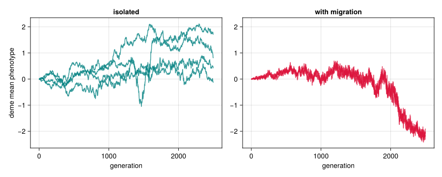
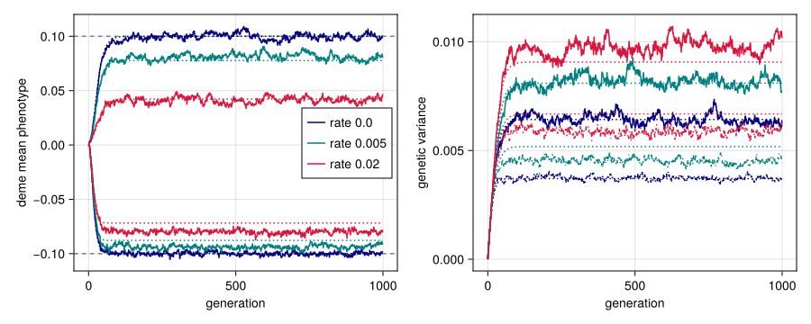

Recomposing the model
Simon Frost
- Overview
- Setup
- Replacing the selection operator
- Dropping or repeating mutation
- Inserting a new operator: a fluctuating optimum
- Stratifying with ⊗ and coupling with migration
- Steps with parameters: demes under different selection
Overview
A generation is the composite develop ⋅ select ⋅ reproduce ⋅ record ⋅ rescale ⋅ mutate ⋅ swap (The categorical layer); the variants below leave out record and rescale, which would do nothing in them. Because each step is a value, the model can be changed by changing the composite: replacing a step, dropping one, repeating one, inserting a new one, or stratifying the population into demes. The validated kernel functions are reused unchanged in every variant below; only the wiring differs.
Setup
using QTLSim
import Catlab # loads QTLSim's categorical layer
using Catlab: ⋅, ⊗
using CairoMakie, Printf, Random, Statistics
CairoMakie.activate!(type = "png")
(; develop, select, reproduce, mutate, swap, generation) = operators()
nothingrun! runs the standard generation, and run_composed runs a life cycle written as syntax (One life cycle, two backends). For operators composed directly, as here, we write a small driver that runs any composite and records the mean phenotype and genetic variance of the parents each generation. Recording calls develop!, which uses no random numbers, so it does not disturb the run.
function run_variant(genop, p::Params; seed)
rng = Xoshiro(seed); w = World(p)
w.env .= sqrt(envVar(p)) .* randn(rng, p.PopSize)
gens = Int[]; zbar = Float64[]; vg = Float64[]; θ = Float64[]
for g in 0:p.NoGenerations-1
w.gen = g
develop!(w)
push!(gens, g); push!(zbar, mean(w.phenotype)); push!(vg, var(w.genotype)); push!(θ, w.θ)
genop(w, rng)
w.extinct && break
end
(gen = gens, pheno_mean = zbar, geno_var = vg, theta = θ, extinct = w.extinct)
end
base = Params(PopSize = 1000, Ploidy = 2, NoQTL = 1, NoGenerations = 2000,
PhenotypeVar = 0.02, Heritability = 0.5, MutationScalar = 0.02,
MutationRatePerGamete = 0.5, InitFitnessSD = 0.3)
colours = [:navy, :teal, :crimson]
nothingReplacing the selection operator
select is one link of the chain. Replacing it changes the selection regime while reproduction and mutation stay the same. Two alternatives: neutral drift, in which everyone survives, and truncation selection, in which only the top fifth of the population by phenotype breeds.
drift = operator(:drift, function (w, rng)
fill!(w.fitness, 1.0)
resize!(w.survivors, w.p.PopSize); w.survivors .= 1:w.p.PopSize
w.nsurv = w.p.PopSize
w
end)
truncation(frac) = operator(:truncation, function (w, rng)
k = max(2, round(Int, frac * w.p.PopSize))
top = partialsortperm(w.phenotype, 1:k; rev = true)
resize!(w.survivors, k); w.survivors .= top; w.nsurv = k
w
end)
selection_variants = [
("stabilising", develop ⋅ select ⋅ reproduce ⋅ mutate ⋅ swap),
("drift", develop ⋅ drift ⋅ reproduce ⋅ mutate ⋅ swap),
("truncation (top 20%)", develop ⋅ truncation(0.2) ⋅ reproduce ⋅ mutate ⋅ swap),
]
runs1 = [(name, run_variant(g, base; seed = 1)) for (name, g) in selection_variants]
nothingfig = Figure(size = (900, 360))
ax1 = Axis(fig[1, 1], xlabel = "generation", ylabel = "mean phenotype")
ax2 = Axis(fig[1, 2], xlabel = "generation", ylabel = "genetic variance")
for ((name, r), c) in zip(runs1, colours)
lines!(ax1, r.gen, r.pheno_mean, color = c, label = name)
lines!(ax2, r.gen, r.geno_var, color = c, label = name)
end
axislegend(ax1, position = :lt)
fig
Figure 1: Replacing only the selection operator. Left: stabilising selection holds the mean at the optimum, drift lets it wander, and truncation selection drives it steadily upward. Right: genetic variance reaches a mutation–selection balance under stabilising selection, builds up under drift and is depleted by truncation.
Dropping or repeating mutation
Leaving mutate out lets selection and drift use up the variance; composing it twice doubles the mutational input, and the balance rises.
mutation_variants = [
("no mutation", develop ⋅ select ⋅ reproduce ⋅ swap),
("mutation", develop ⋅ select ⋅ reproduce ⋅ mutate ⋅ swap),
("mutation twice", develop ⋅ select ⋅ reproduce ⋅ mutate ⋅ mutate ⋅ swap),
]
runs2 = [(name, run_variant(g, base; seed = 2)) for (name, g) in mutation_variants]
for (name, r) in runs2
@printf("%-15s mean genetic variance over the last 500 generations: %.5f\n",
name, mean(r.geno_var[end-499:end]))
endno mutation mean genetic variance over the last 500 generations: 0.00000
mutation mean genetic variance over the last 500 generations: 0.00623
mutation twice mean genetic variance over the last 500 generations: 0.00912fig = Figure(size = (640, 360))
ax = Axis(fig[1, 1], xlabel = "generation", ylabel = "genetic variance")
for ((name, r), c) in zip(runs2, colours)
lines!(ax, r.gen, r.geno_var, color = c, label = name)
end
axislegend(ax, position = :rt)
fig
Figure 2: Changing the mutation input by recomposition. Without mutation the genetic variance decays; with mutation applied twice per generation the balance is higher than with the standard generation.
Inserting a new operator: a fluctuating optimum
New biology can be added as a new operator, built with operator(name, act). In QTSim the optimum either stands still or moves at a constant rate; here an operator sets it to oscillate, $\theta_t = A \sin(2\pi t / P)$, and is inserted before selection. (select only moves the optimum itself when MoveFitnessSDGen is set, so it leaves this one alone.)
fluctuating(A, P) = operator(:fluctuate, (w, rng) -> (w.θ = A * sin(2π * w.gen / P); w))
periods = [20, 100, 500]
runs3 = [(P, run_variant(develop ⋅ fluctuating(0.1, P) ⋅ select ⋅ reproduce ⋅ mutate ⋅ swap,
base; seed = 3)) for P in periods]
for (P, r) in runs3
late = length(r.gen)-999:length(r.gen)
@printf("period %3d: the mean phenotype follows the optimum with correlation %.2f\n",
P, cor(r.pheno_mean[late], r.theta[late]))
endperiod 20: the mean phenotype follows the optimum with correlation 0.30
period 100: the mean phenotype follows the optimum with correlation 0.72
period 500: the mean phenotype follows the optimum with correlation 0.97fig = Figure(size = (900, 300))
for (k, (P, r)) in enumerate(runs3)
ax = Axis(fig[1, k], title = "period $P", xlabel = "generation",
ylabel = k == 1 ? "phenotype / optimum" : "", limits = ((1000, 2000), (-0.15, 0.15)))
lines!(ax, r.gen, r.theta, color = :gray, linestyle = :dash)
lines!(ax, r.gen, r.pheno_mean, color = colours[k])
end
fig
Figure 3: A population under an optimum oscillating with amplitude 0.1 (dashed) and three periods. It tracks slow oscillations closely, lags behind intermediate ones and responds only weakly to fast ones.
Stratifying with ⊗ and coupling with migration
⊗ turns one population into a metapopulation of demes, and the composed generation acts on each deme. A migration operator composed in with ⋅ couples them. Under neutral drift, isolated demes drift apart; a little migration keeps them together.
function run_demes(genop, s, ngen; seed)
rng = Xoshiro(seed)
for d in s.demes; d.env .= sqrt(envVar(d.p)) .* randn(rng, d.p.PopSize); end
means = [Float64[] for _ in s.demes]
for g in 0:ngen-1
for (k, d) in enumerate(s.demes)
d.gen = g; develop!(d); push!(means[k], mean(d.phenotype))
end
genop(s, rng)
end
means
end
small = Params(PopSize = 200, Ploidy = 2, NoQTL = 1, PhenotypeVar = 0.02, Heritability = 0.5,
MutationScalar = 0.05, MutationRatePerGamete = 0.5)
neutral = develop ⋅ drift ⋅ reproduce ⋅ mutate ⋅ swap
isolated = run_demes(neutral, small ⊗ demes(4), 2500; seed = 4)
coupled = run_demes(neutral ⋅ migration(0.05), small ⊗ demes(4), 2500; seed = 4)
spread(ms) = std([m[end] for m in ms])
@printf("spread of the deme means after 2500 generations: isolated %.3f, with migration %.3f\n",
spread(isolated), spread(coupled))spread of the deme means after 2500 generations: isolated 0.778, with migration 0.115fig = Figure(size = (900, 360))
ax1 = Axis(fig[1, 1], xlabel = "generation", ylabel = "deme mean phenotype", title = "isolated")
ax2 = Axis(fig[1, 2], xlabel = "generation", title = "with migration")
for k in 1:4
lines!(ax1, 0:length(isolated[k])-1, isolated[k], color = (:teal, 0.8))
lines!(ax2, 0:length(coupled[k])-1, coupled[k], color = (:crimson, 0.8))
end
linkyaxes!(ax1, ax2)
fig
Figure 4: Four neutral demes. Left: isolated, their means drift apart. Right: with 5% migration per generation composed into the generation, they stay together.
Steps with parameters: demes under different selection
The operators above take their parameters from Params. A step of the life cycle can carry its own instead, as part of the syntax: withparams gives a step parameters, and the result is a new generator, named by the step and its parameters, with the same type. Here deme 1 selects toward an optimum of 0.1 with width 0.3, and deme 2 toward −0.1 with width 0.15. migrate(2; rate) carries its rate.
L = lifecycle(); g = L.generation
narrow = withparams(L.select; θ = -0.1, ω = 0.15)
println(narrow, ": ", Catlab.dom(narrow), " → ", Catlab.codom(narrow))
two_demes(rate) = withparams(g; θ = 0.1, ω = 0.3) ⊗ withparams(g; θ = -0.1, ω = 0.15) ⋅ L.migrate(2; rate)
two_demes(0.01)select(θ = -0.1, ω = 0.15): Adults → Survivors
((develop⋅select(θ = 0.1, ω = 0.3)⋅reproduce⋅record⋅rescale⋅mutate⋅swap)⊗(develop⋅select(θ = -0.1, ω = 0.15)⋅reproduce⋅record⋅rescale⋅mutate⋅swap))⋅migrate(rate = 0.01): Zygotes⊗Zygotes → Zygotes⊗ZygotesThe same life cycle lowers to the kernel and to the moments of a Gaussian population, and each step’s parameters go with it. In the moments lowering, migrate mixes the demes as the kernel’s migration does: a deme’s mean becomes the weighted mean of the demes its individuals came from, and its genetic variance the variance within them plus the variance between their means. Below, 20 kernel runs per migration rate are averaged and set against the moments.
pd = Params(base; PopSize = 500, NoGenerations = 1000)
rates = [0.0, 0.005, 0.02]
deme(o, d) = (i = findall(==(d), o.deme); (o.gen[i], o.pheno_mean[i], o.geno_var[i]))
moments = [run_moments(pd; cycle = two_demes(r)) for r in rates]
kernel = map(rates) do r
runs = [run_composed(pd ⊗ demes(2), Xoshiro(s); cycle = two_demes(r)) for s in 1:20]
[mean(deme(o, d)[k] for o in runs) for d in 1:2, k in 2:3] # mean trajectories
end
for (r, mo, k) in zip(rates, moments, kernel)
late(x) = mean(x[601:end])
@printf("rate %.3f: deme means differ by %.3f in the kernel, %.3f in the moments\n",
r, late(k[1, 1]) - late(k[2, 1]), late(deme(mo, 1)[2]) - late(deme(mo, 2)[2]))
endrate 0.000: deme means differ by 0.199 in the kernel, 0.200 in the moments
rate 0.005: deme means differ by 0.175 in the kernel, 0.166 in the moments
rate 0.020: deme means differ by 0.122 in the kernel, 0.115 in the momentsfig = Figure(size = (900, 360))
ax1 = Axis(fig[1, 1], xlabel = "generation", ylabel = "deme mean phenotype")
ax2 = Axis(fig[1, 2], xlabel = "generation", ylabel = "genetic variance")
hlines!(ax1, [0.1, -0.1], color = :gray, linestyle = :dash)
for (r, mo, k, c) in zip(rates, moments, kernel, colours), d in 1:2
gens = deme(mo, d)[1]
lines!(ax1, gens, k[d, 1], color = c, label = d == 1 ? "rate $r" : nothing)
lines!(ax1, gens, deme(mo, d)[2], color = c, linestyle = :dot)
lines!(ax2, gens, k[d, 2], color = c, linestyle = d == 1 ? :solid : :dashdot)
lines!(ax2, gens, deme(mo, d)[3], color = c, linestyle = :dot)
end
axislegend(ax1, position = :rc)
fig
Figure 5: Two demes selected toward different optima (dashed), deme 2 more narrowly, at three migration rates. Kernel means over 20 runs (solid) and the moments lowering (dotted). Migration pulls the deme means together, and more strongly the deme under weaker selection. Right: genetic variance, which migration raises in both demes.
The moments get the means right and the direction of every effect, and without migration the genetic variance to within 3%: by default the lowering is the multilocus Gaussian model, in which, for this one diploid locus, the part of selection’s reduction of the variance that lies between an individual’s two alleles is lost at the next reproduction (the older aggregate recursion, loci = :aggregate, inherits all of it and predicts 30% too little variance here). Under migration they predict 5–6% less divergence than the kernel shows; a deme that has received migrants is a mixture, not the Gaussian population the next selection assumes. With the moments lowering covering several demes, any metapopulation built from these steps has a deterministic prediction, and each deme can have its own parameters there, in the kernel ([p1, p2] ⊗ demes(2)) and in SLiM (slim_script(cycle, [p1, p2])).
Every variant here is a line of composition rather than a change to the simulator. That rearranging the operators is well defined, that composition is associative and a run is the iterate of one composed generation, is what lean/CategoricalQuantGen/Composition.lean proves.